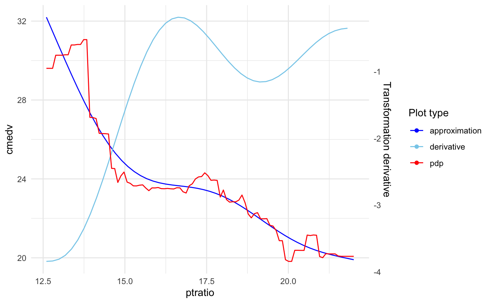
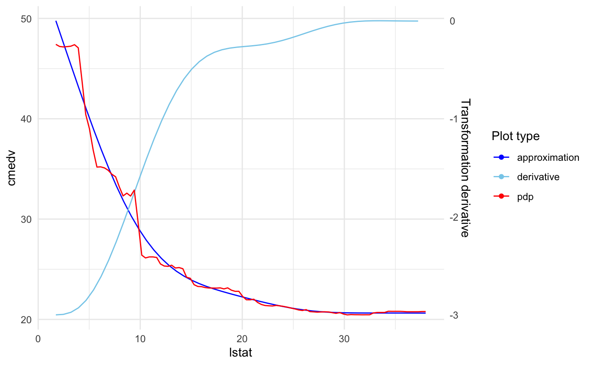
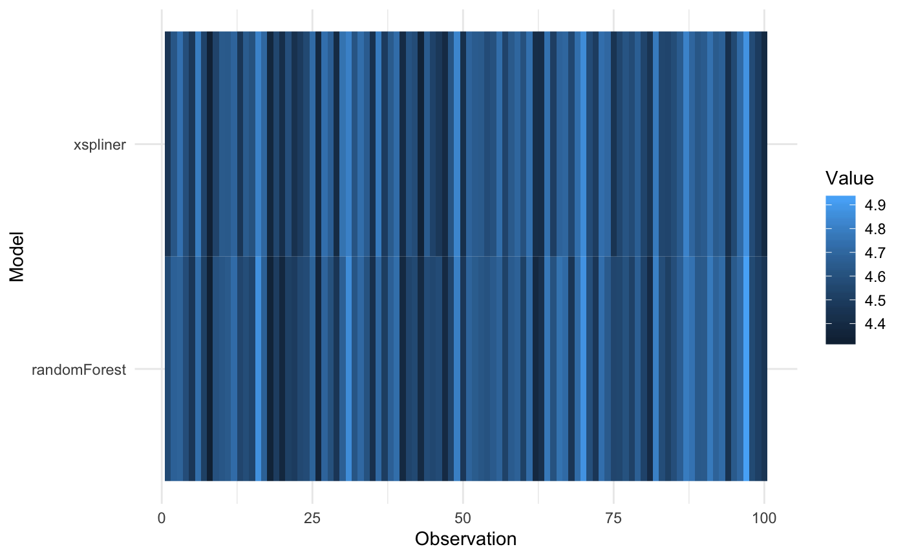
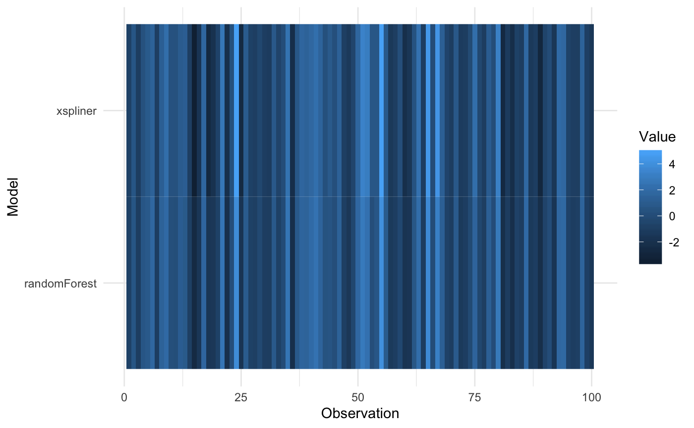
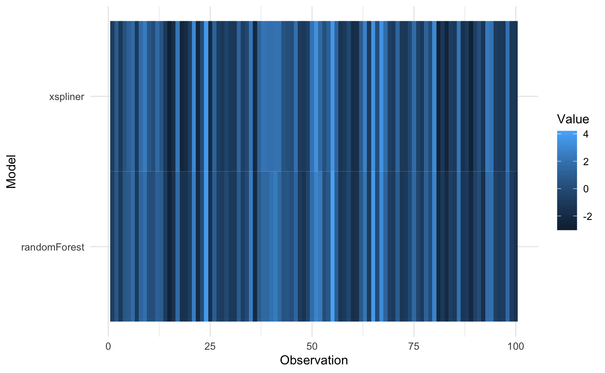
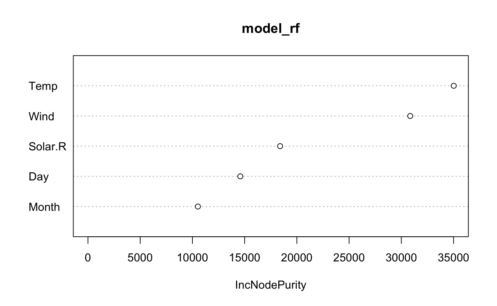
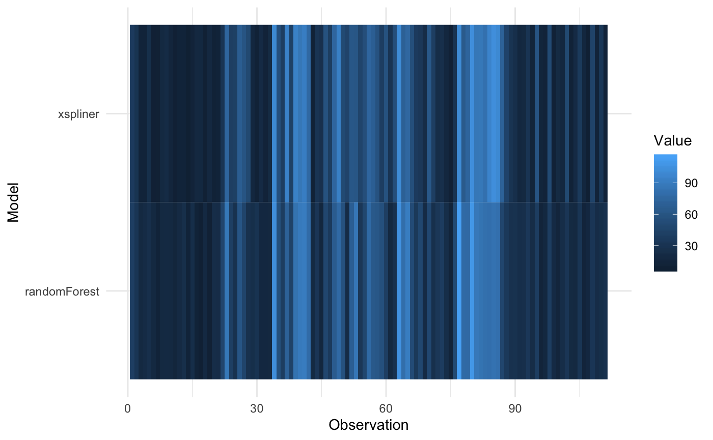

Extra information about the package
Krystian Igras
2019-09-13
extras.RmdThis sections provides some additional information and features that xspliner provides.
Monotonic splines approximation
For qualitative variables only
In some cases you may want to transform variables with monotonic function. xspliner provides an option for monotonic spline approximation. You just need to specify monotonic parameter for the local, or global xs transition. It actually can have 4 values:
- “not” the default one. Monotonicity is not required
- “up” approximation is increasing function
- “down” approximation is decreasing function
- “auto” compare increasing and decreasing approximation and chooses better one (basing on \(R^2\) statistic)
Let’s see below example:
library(randomForest)
library(pdp)
library(xspliner)
data(boston)
set.seed(123)
boston_rf <- randomForest(cmedv ~ lstat + ptratio + age, data = boston)
model_xs <- xspline(
cmedv ~
xs(lstat, transition = list(k = 6), effect = list(type = "pdp", grid.resolution = 100)) +
xs(ptratio, transition = list(k = 5), effect = list(type = "pdp", grid.resolution = 100)) +
age,
model = boston_rf,
xs_opts = list(transition = list(monotonic = "auto"))
)
plot(model_xs, "ptratio", plot_deriv = TRUE)

Choose if approximation is better
For qualitative variables only
When the response function has linear form, approximating it with splines may make the result worse. xspline function offers automatic check if the spline approximation is better than linear one, and use it in the final model.
You may find two parameters responsible for that:
-
alter- The sub-parameter oftransition. We already know how this parameter works for “always” and “never” values. There is also the third option, “auto”. In this case xspline automatically chooses whether variable should be transformed with splines -
compare_stat- function oflmclass object. It defines statistic that should be used in decision between spline model and linear one. The function should have the attributehigher. When the attribute has"better"value then the model with higher statistic value is chosen.
You can see the feature in above example:
set.seed(123)
boston_rf <- randomForest(cmedv ~ lstat + ptratio + age, data = boston)
model_pdp_auto <- xspline(
cmedv ~
xs(lstat, transition = list(k = 6), effect = list(type = "pdp", grid.resolution = 60)) +
xs(ptratio, transition = list(k = 4), effect = list(type = "pdp", grid.resolution = 40)) +
age,
model = boston_rf,
xs_opts = list(transition = list(alter = "auto"))
)
# aic statistic is used by default
summary(model_pdp_auto)##
## Call:
## stats::glm(formula = cmedv ~ xs(lstat) + ptratio + age, family = family,
## data = data)
##
## Deviance Residuals:
## Min 1Q Median 3Q Max
## -12.7619 -3.2031 -0.6366 2.8787 26.9953
##
## Coefficients:
## Estimate Std. Error t value Pr(>|t|)
## (Intercept) 4.638819 2.952287 1.571 0.117
## xs(lstat) 1.248040 0.048545 25.709 < 2e-16 ***
## ptratio -0.858557 0.113027 -7.596 1.51e-13 ***
## age 0.054359 0.009827 5.532 5.11e-08 ***
## ---
## Signif. codes: 0 '***' 0.001 '**' 0.01 '*' 0.05 '.' 0.1 ' ' 1
##
## (Dispersion parameter for gaussian family taken to be 24.87722)
##
## Null deviance: 42578 on 505 degrees of freedom
## Residual deviance: 12488 on 502 degrees of freedom
## AIC: 3068.2
##
## Number of Fisher Scoring iterations: 2Linear approximation was better for ptratio response function.
Specifying model family and link
When GLM model is estimated there is possibility to specify response family and link parameters. Family stores information about the distribution of response - standard one is gaussian, which assumes that the response comes from a normal distribution. For classification the binomial family is used.
Link parameters stores info about what function should be used to transform the response. The transformation is used in the final model fitting. The standard link is the identity (for gaussian distribution) - for binomial distribution logit is used.
See more at ??stats::family.glm.
xspline function allows you to decide which response should be used in the final model. Let’s check the example below in which poisson distribution with log link is used.
library(xspliner)
library(randomForest)
x <- rnorm(100)
z <- rnorm(100)
y <- rpois(100, exp(1 + x + z))
data <- data.frame(x, y, z)
model_rf <- randomForest(y ~ x + z, data = data)
model_xs_1 <- xspline(model_rf)
model_xs_2 <- xspline(model_rf, family = poisson(), link = "log")Let’s compare two models by checking its AIC statistics:
## [1] 672.5753## [1] 580.0274As we can see the second model is better.
Transformed response
In some cases you may want to transform model response with you own function. Let’s check the example below with random forest model:
set.seed(123)
x <- rnorm(100, 10)
z <- rnorm(100, 10)
y <- x * z * rnorm(100, 1, 0.1)
data <- data.frame(x, z, y)
model_rf <- randomForest(log(y) ~ x + z, data = data)In this case log transformation for y, removes interaction of x and z. In xspliner same transformation is used by default:
##
## Call:
## stats::glm(formula = log(y) ~ xs(x) + xs(z), family = family,
## data = data)
##
## Deviance Residuals:
## Min 1Q Median 3Q Max
## -0.187175 -0.057420 -0.002821 0.058715 0.213533
##
## Coefficients:
## Estimate Std. Error t value Pr(>|t|)
## (Intercept) -6.3310 0.8078 -7.838 5.93e-12 ***
## xs(x) 1.1833 0.1400 8.449 2.96e-13 ***
## xs(z) 1.1946 0.1062 11.248 < 2e-16 ***
## ---
## Signif. codes: 0 '***' 0.001 '**' 0.01 '*' 0.05 '.' 0.1 ' ' 1
##
## (Dispersion parameter for gaussian family taken to be 0.008017078)
##
## Null deviance: 2.36576 on 99 degrees of freedom
## Residual deviance: 0.77766 on 97 degrees of freedom
## AIC: -193.88
##
## Number of Fisher Scoring iterations: 2
Multiplicative form
When interactions between predictors occurs black box models in fact deal much better that linear models. xspliner offers using formulas with variables interactions.
You can do it in two possible forms.
Lets start with creating data and building black box:
x <- rnorm(100)
z <- rnorm(100)
y <- x + x * z + z + rnorm(100, 0, 0.1)
data <- data.frame(x, y, z)
model_rf <- randomForest(y ~ x + z, data = data)The first option is specifying formula with * sign, as in standard linear models.
##
## Call:
## stats::glm(formula = y ~ x * z, family = family, data = data)
##
## Deviance Residuals:
## Min 1Q Median 3Q Max
## -0.25207 -0.07359 -0.00393 0.05399 0.35369
##
## Coefficients:
## Estimate Std. Error t value Pr(>|t|)
## (Intercept) 0.003076 0.011178 0.275 0.784
## x 0.979334 0.011650 84.062 <2e-16 ***
## z 1.007693 0.010496 96.007 <2e-16 ***
## x:z 0.991345 0.011292 87.792 <2e-16 ***
## ---
## Signif. codes: 0 '***' 0.001 '**' 0.01 '*' 0.05 '.' 0.1 ' ' 1
##
## (Dispersion parameter for gaussian family taken to be 0.01193796)
##
## Null deviance: 295.424 on 99 degrees of freedom
## Residual deviance: 1.146 on 96 degrees of freedom
## AIC: -153.1
##
## Number of Fisher Scoring iterations: 2
The second one is adding form parameter equal to “multiplicative” in case of passing just the model or dot formula.
##
## Call:
## stats::glm(formula = y ~ xs(x) * xs(z), family = family, data = data)
##
## Deviance Residuals:
## Min 1Q Median 3Q Max
## -0.62089 -0.27456 0.00258 0.16788 1.42959
##
## Coefficients:
## Estimate Std. Error t value Pr(>|t|)
## (Intercept) -0.06527 0.03838 -1.701 0.0923 .
## xs(x) 1.11395 0.04946 22.521 <2e-16 ***
## xs(z) 0.95928 0.03859 24.856 <2e-16 ***
## xs(x):xs(z) 1.09751 0.05076 21.620 <2e-16 ***
## ---
## Signif. codes: 0 '***' 0.001 '**' 0.01 '*' 0.05 '.' 0.1 ' ' 1
##
## (Dispersion parameter for gaussian family taken to be 0.1419257)
##
## Null deviance: 295.424 on 99 degrees of freedom
## Residual deviance: 13.625 on 96 degrees of freedom
## AIC: 94.46
##
## Number of Fisher Scoring iterations: 2
##
## Call:
## stats::glm(formula = y ~ xs(x) * xs(z), family = family, data = data)
##
## Deviance Residuals:
## Min 1Q Median 3Q Max
## -0.62089 -0.27456 0.00258 0.16788 1.42959
##
## Coefficients:
## Estimate Std. Error t value Pr(>|t|)
## (Intercept) -0.06527 0.03838 -1.701 0.0923 .
## xs(x) 1.11395 0.04946 22.521 <2e-16 ***
## xs(z) 0.95928 0.03859 24.856 <2e-16 ***
## xs(x):xs(z) 1.09751 0.05076 21.620 <2e-16 ***
## ---
## Signif. codes: 0 '***' 0.001 '**' 0.01 '*' 0.05 '.' 0.1 ' ' 1
##
## (Dispersion parameter for gaussian family taken to be 0.1419257)
##
## Null deviance: 295.424 on 99 degrees of freedom
## Residual deviance: 13.625 on 96 degrees of freedom
## AIC: 94.46
##
## Number of Fisher Scoring iterations: 2
Subset formula
Every example we saw before used to use the same variables in black box and xspliner model. In fact this is not obligatory. How can it be used? For example to build a simpler model based on truncated amount of predictors. Let’s see below example:
library(randomForest)
library(xspliner)
data(airquality)
air <- na.omit(airquality)
model_rf <- randomForest(Ozone ~ ., data = air)
varImpPlot(model_rf)
As we can see Wind and Temp variables are of the highest importance. Let’s build xspliner basing on just the Two variables.
##
## Call:
## stats::glm(formula = Ozone ~ xs(Wind) + xs(Temp), family = family,
## data = data)
##
## Deviance Residuals:
## Min 1Q Median 3Q Max
## -45.078 -9.027 -1.908 8.083 81.449
##
## Coefficients:
## Estimate Std. Error t value Pr(>|t|)
## (Intercept) -89.4457 8.2639 -10.824 < 2e-16 ***
## xs(Wind) 1.5576 0.2095 7.436 2.60e-11 ***
## xs(Temp) 1.5583 0.1855 8.399 1.95e-13 ***
## ---
## Signif. codes: 0 '***' 0.001 '**' 0.01 '*' 0.05 '.' 0.1 ' ' 1
##
## (Dispersion parameter for gaussian family taken to be 321.0854)
##
## Null deviance: 121802 on 110 degrees of freedom
## Residual deviance: 34677 on 108 degrees of freedom
## AIC: 960.62
##
## Number of Fisher Scoring iterations: 2Or model including variables interaction:
##
## Call:
## stats::glm(formula = Ozone ~ xs(Wind) * xs(Temp), family = family,
## data = data)
##
## Deviance Residuals:
## Min 1Q Median 3Q Max
## -38.940 -10.049 -0.665 7.755 66.926
##
## Coefficients:
## Estimate Std. Error t value Pr(>|t|)
## (Intercept) -198.99004 36.90872 -5.391 4.21e-07 ***
## xs(Wind) 4.18800 0.88861 4.713 7.39e-06 ***
## xs(Temp) 3.80619 0.76085 5.003 2.23e-06 ***
## xs(Wind):xs(Temp) -0.05251 0.01728 -3.040 0.00298 **
## ---
## Signif. codes: 0 '***' 0.001 '**' 0.01 '*' 0.05 '.' 0.1 ' ' 1
##
## (Dispersion parameter for gaussian family taken to be 298.3263)
##
## Null deviance: 121802 on 110 degrees of freedom
## Residual deviance: 31921 on 107 degrees of freedom
## AIC: 953.43
##
## Number of Fisher Scoring iterations: 2